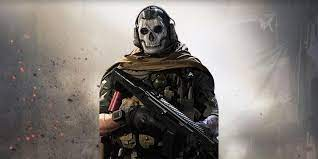
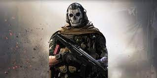

I like to play games like COD Mobile a lot. Sure it's stressful because I keep getting killed,but I look to the brightside. Playing with friends ,meeting new people.You can even start your own clan and command your own army. It has almost a 100 maps not including the pc COD games. I love using snipers for short range because they are "One Shot One Kill" IDK who said this but it's true. I mainly use the DL Q33 - - - - - - - - - - - - - - - - - - - - - - - (Image bellow)
The game updates every 2 to 3 months so there is a lot of content. They add new guns every update . The only problem is, it is a pain to get them. Hours of grinding to get them . My favourite assault rifle is the M13 - - - - - - - - - - -- - - -- - - - - - - - - - - -- - - --
High Firerate ,High control, Fast ADS speed ,Long range ,(aka: the best assault rifle)


 
